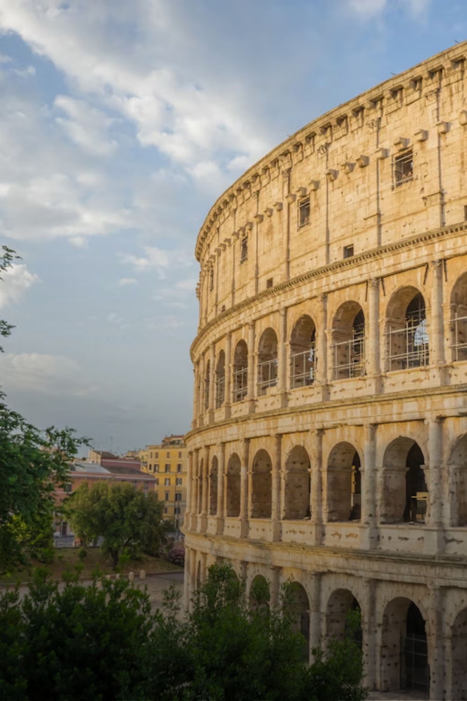
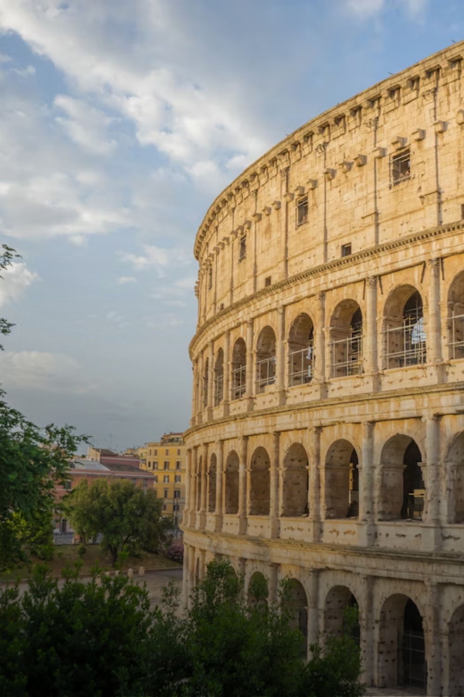
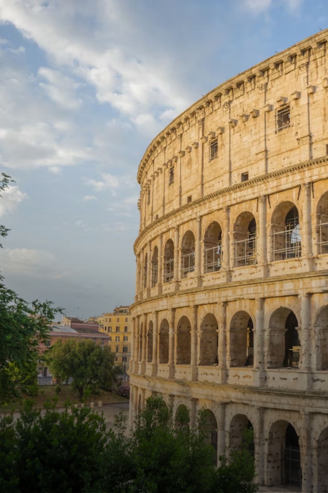
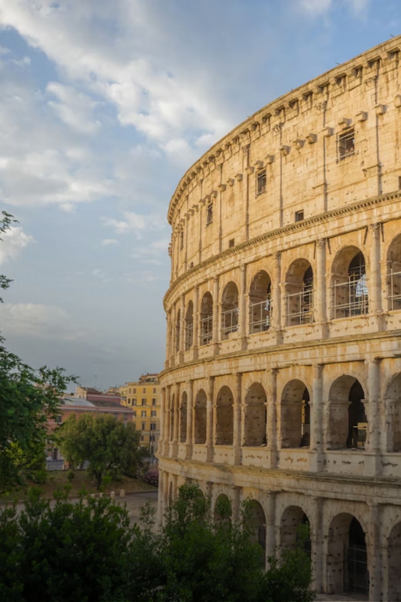

Given Italy's art- and architecture-stuffed cities to its astonishing diversity of natural landscapes – dramatic coastlines, serene lakes, pristine mountains and those famous rolling hills – picking just a handful of destinations to visit in this wonderful country is not easy. Here are some of the top places to explore:
Dolomite Alps or Dolomitic Alps, are a mountain range in northeastern Italy. They form part of the Southern Limestone Alps and extend from the River Adige in the west to the Piave Valley in the east
Nestled in the shadow of the Rhaetian Alps, dazzling Lago di Como is Lombardy's most spectacular lake. Its lavish Liberty-style villas are home to movie moguls, fashion royalty and literal royalty.
Tuscany is a region in central Italy known for its beautiful landscapes, rich artistic legacy, and influence on high culture. It is home to Florence, the birthplace of the Renaissance.
Naples is a vibrant city in southern Italy known for its rich history, art, and cuisine. It is the birthplace of pizza and offers stunning views of the Bay of Naples and Mount Vesuvius.
You have seen some key destinations in Italy. On the next page, you can see how people live and enjoy life in these places and how to enjoy Italy.